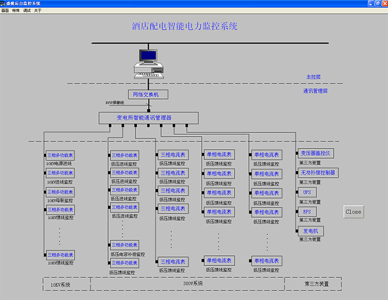
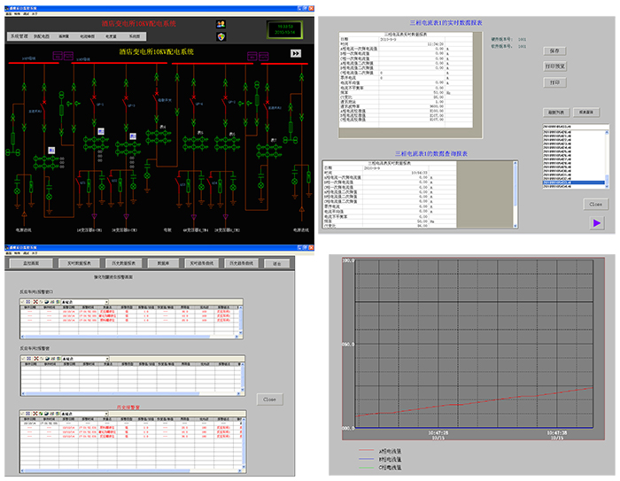

产品简介
SLESys智能配电监控系统是中国光谷电气不断创新、不断完善的一套配电管理系统。随着经济的飞速发展，能源紧张、环境恶化已受到全球的密切关注，能源是发展国民经济的重要基础，走可持续发展的道路，节能降耗是首要任务。其中，电能在所有能源中消耗量比较大，对电能的统一管理显得尤为重要。只有对电能进行准确可靠的计量，才能从真正意义上节约电能。SLESys智能配电监控系统以网络电力仪表、智能配电设备为基础，应用计算机软硬件技术、自动控制技术、电子技术、通信技术等电力行业以及电力行业相关领域的先进技术。
SLESys智能配电监控系统汇集数据采集与控制、数据处理和存储、图像显示与高级分析等多功能于一体，对配电网进行监控与管理，使配电网运行于安全、可靠、优质、高效的最佳状态，实现对配电网络的远程测量、控制、管理，实现了电网优化、用电安全、电能管理、节能降耗的需求；系统广泛应用于交通、工厂、学校、医院、建筑、住宅小区及商业写字楼等智能配电领域。
一体化的设计思想、模块化的应用功能、灵活的系统配置、开放式的软硬件平台、丰富的通讯接口协议为用户提供定制化服务。
系统结构
现场采集层
该层由智能配电监控终端设备(RTU 和 FTU)组成,包括智能网络电力测量仪表及其他保护装置、直流屏、变压器温控仪、发电机组等，智能终端设备可集中可分散安装于个配电回路中。
通信管理层
通信管理层是监控终端设备与中心监控设备的链接的信息桥梁，通过协议转换实现数据的通信。其主要负责中心监控层通信协议等命令的发送与现场采集层数据的回传，同时也担负着上下层网络速率和数据报文格式的转换等功能，实现现场数据与高速网络的实时互联通信。
主要包括：串口卡、通信隔离模组、网络交换机、串口服务器、光端机、光线收发器、触摸一体机、无线联网服务器以及各种通信媒介(屏蔽双绞线、光缆、网线)等，多样化的通信设备及通信模式可适用于不同方式的通信拓扑网络中，组网结构满足现场设备可靠运行、便于故障查找、有利于设备维护的要求。
中心管理层
中心管理层通过计算机及SLESys智能配电监控系统实现系统管理功能，为用户提供良好的人机交互界面、集中管理需要的监控的全部设备，实时反馈监控信息，实现电力系统的四遥功能。实时召唤现场层采集的数据，杜绝以往人工抄表的误差，节省了人力资源，使电力变配电自动化系统的使用和维护成本大大降低，使远端监控的集成度和易用性大幅度提高。
中心管理层主要包括SLESys智能配电监控系统软件、监控主机、显示器、UPS不间断电源以及打印机等外设。
系统主要功能
友好的人机界面
设计适合客户要求的交互界面；标准图元库，方便调用组合；实时数据采集和显示；数据信息的自动逻辑计算和处理；设备参数远程更改设定；合、分闸状态显示和强制操作，系统支持多画面切换以及大幅画面导航、显示分散系统的地理平面功能；同时系统支持大屏幕液晶电视、投影、模拟屏等多种终端的数据输出。
数据采集功能
SLESys智能配电监控系统可实时刷新和定时定频刷新显示电气设备的电流、电压、有功电能、无功电能、功率因数以及频率、谐波、电力品质参数等模拟量；断路器、隔离开关、智能设备通信状态、各种告警信号等数字量，并能检测出状态变位、模拟量越限、装置异常等，生产事件/告警信息，发出语音报警，报所有的信息都通过网络发送到后台的监控系统，有监控系统统一进行管理，并对重要信息量进行数据库存储。
操作控制管理
系统具有强大的控制操作功能。支持本地手动、远程遥控装置进行分合闸；同时监控系统和监控装置之间可以无缝链接，但又相互独立运行互不干扰；系统具有权限保护，防止闭锁功能，还可根据开关量和模拟量的组合实现闭锁，系统轻松实现“四遥”功能。
趋势曲线分析
SLESys智能配电监控系统提供实时曲线和历史趋势曲线分析功能。曲线界面可同时显示多条不同曲线，颜色以及显示效果可自行调整。实时曲线随系统实时刷新数据显示回路当前的运行负荷状况，系统通过调用某配出回路的实时曲线可对该回路监控设备所引起的信号波动情况进行分析。历史曲线是被用以查看系统以存储数据信息，利用曲线形式可直观的分析出整个系统的用电趋势，为合理分配系统负荷提供强有力的依据，也方便用户对检测的配电网络进行品质分析。
告警及事件
SLESys智能配电监控系统对用户操作、参数越限以及其他用户实际需求时间均具有详细的报警和记录功能，包括事件发生的时间戳，当前值班人员是否确认事件，并对主要的电气设备的运行参数和设备状态进行监视，出现异常情况立即报警，提醒操作员及时的进行故障处理。
当系统所采集的模拟量发生越限、数字量变位以及网路通信状态自诊断故障时，系统会立即退出告警窗口、画面颜色改变并闪烁、语音播报方式提醒操作员尽快处理，系统还支持值班室无人坚守情况下短息、电话报警功能，报警不解除，该界面无消失。报警同时记录故障时间、对象、性质，一般的事故系统会自动的驱动打印机实时打印事故发生时的数据记录，并可以提供故障处理帮助信息，将事件存入历史数据库，形成事故追忆。
报警事件信息和告警信息可导出保存成Excel文件格式，方便用户转存、打印和查看。
报表打印
SLESys智能配电监控系统具有强大的报表计量和存储功能，支持高精度的电量测量、电能计量、远程抄表、自动报表生产、电气数据集中管理，复费率统计分析、用电成本分析，用电效率分析，精确的用电成本考核等功能。
系统可根据用户需求设计定制日报表、月报表、季度报表、年度报表等多种格式，用电量统计、分时电能计量、复费率统计、峰谷等多种功能的报表，系统自动统计用电量。并提供完善的报表查询服务，可以查询和打印系统记录的所有数据值，并支持在线和自动打印。
录波功能
当线路发生故障，如电压或者电流突变，系统会自动录制波形。在一个事件中，系统在每通道进行采样。记录电流和电压用于事件所对用波形的前后分析。
用户权限管理
SLESys智能配电监控系统系统可根据用户需要设置不同的权限级别，不同级别的操作人员享有不同的权利和承担不同的义务责任，每个等级的用户只能执行相应级别的操作，执行高于自己等级的操作时被禁止的，符合要求时，系统才能响应对应权限用户的操作，有力的保障了系统运行的安全性和可靠性。
系统一般保留最高管理权限，最高权限可以完成系统的所有操作，并具有添加操作员，分配操作人员的权限和操作员取消的权利。
其他系统的接入
系统可以经不同的系统通过网络进行网络接口互联，提供的商业数据库系统接口可以方便数据库的共享。可以通过网络实现不同的系统之间的信息共享。
系统可以接入带通信接口的微机保护装置，实现保护装置的通信联网，实现保护装置的远程管理。
不同的设备接入系统仅仅需要相应设备的规约标准，通过软件规约转化就能实现设备的方便接入，可以减少硬件设备的投入。
系统参数
●遥测综合误差率 ≤ 1.5%
●遥信处理正确率 ≥ 99.99%
●遥控操作成功率 ≥ 99.99%
●实时画面调用时间 ≤ 1秒
●实时画面刷新时间 ≤ 1秒
●事故告警响应时间 ≤ 2秒
●统计画面调用时间 ≤ 5秒
●全网时间误差小于100毫秒
●系统平均无故障时间：系统MTBF ≥ 40000小时
●工作环境温度：-20℃ ~65℃
●存储环境温度：-40℃ ~85℃
